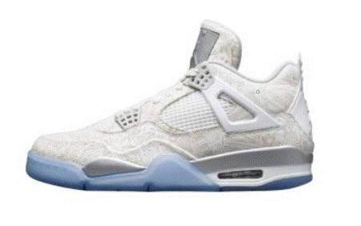

|  | Air Jordan 4是耐克乔丹系列的第四双正代篮球鞋，诞生于1988年，是Air Jordan 系列非常经典的一款，让这个系列拥有了灵魂，并且Air Jordan 4鞋面上篮网状的鞋带扣闻名于世Air Jordan 4的出现，第一次明确了AirJordan系列将会与Flight系列相互相成，互相借鉴，同时也第一次提出了后卫篮球鞋的概念。在那个Force篮球鞋主导市场的年代里，初生的Flight系列是孱弱的，Flight象征着飞行，使用Flight系列的都是一些在篮板上空工作的飞行者，那些拥有极佳弹跳的球员被称为Flight，他们往往能够带来最精彩的演出，是篮球场上最受欢迎的人物，而乔丹正是这种球员的代表，于是1989年推出的Air Jordan4和同年推出的Air Flight 89成为了首先使用Flight标志的两双球鞋，这两双球鞋的出现也预示着Flight系列的诞生。虽然AirJordan 4是目前为止唯一一双出现过Flight字样的Air Jordan篮球鞋，但是Flight系列的设计理念却不折不扣的融入了AirJordan系列的设计中，这也使得Air Jordan系列朝着轻量化和速度化的方向发展，这种永远向上飞翔的精神已经深深的融入了AirJordan系列的灵魂中，可以说Air Jordan 4就像整个Air Jordan系列的一个重生，或者说是一次涅盘。. |